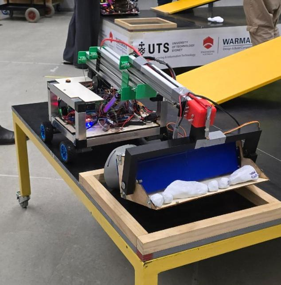
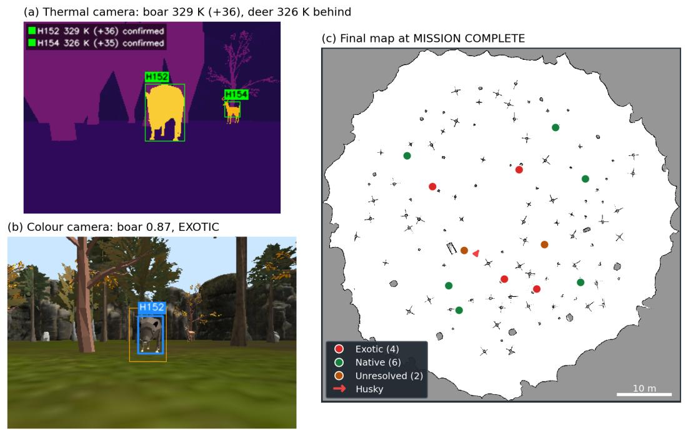
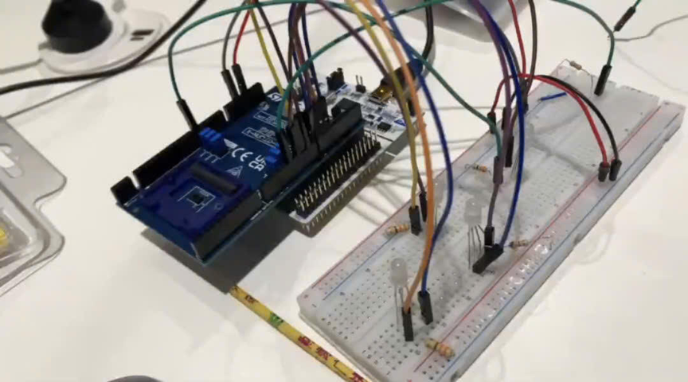
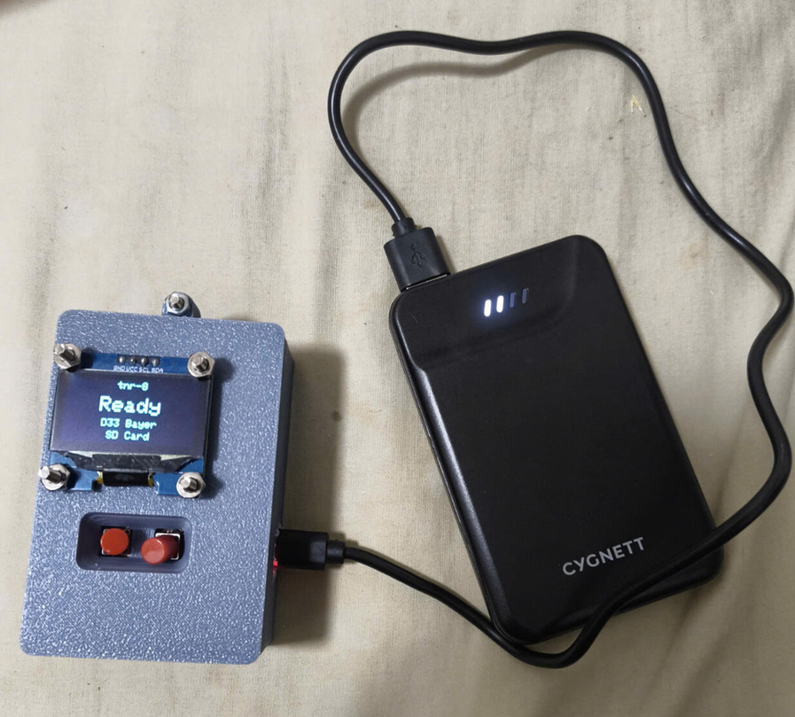
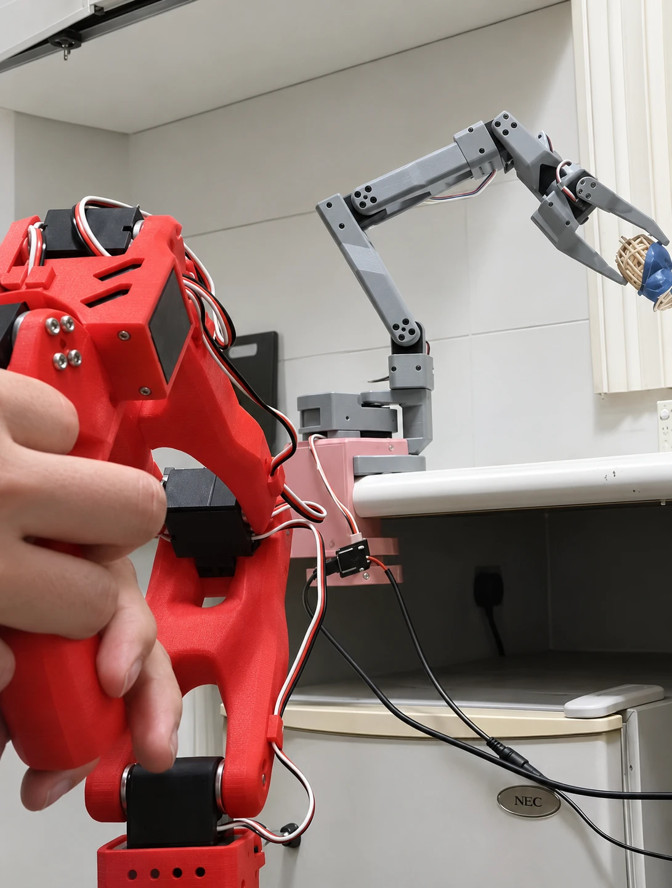
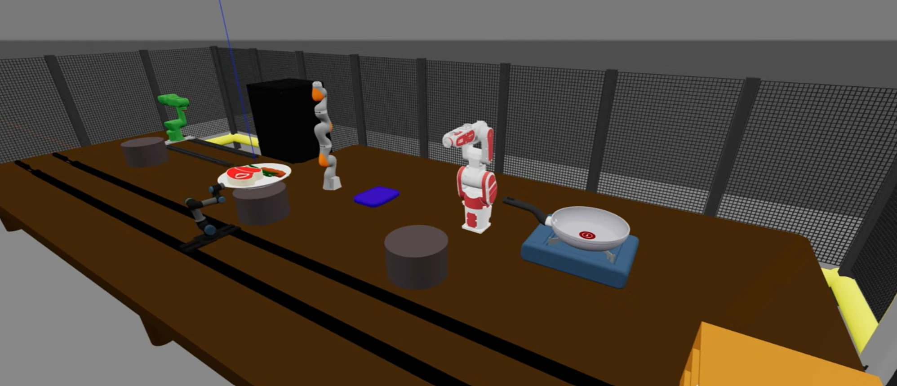

Undergraduate mechatronics engineering student / UTS / Sydney
Nhat ThienMai

Third-year mechatronics engineering student at the University of Technology Sydney. I take hardware from CAD and force analysis through prototyping, wiring, firmware and the test bench.
Currently an R&D engineering intern at UTS Tech Lab, running bench experiments on a multi-channel fibre-optic sensing chain.
Index / 01
Projects(06)
2025 — 2026
3rd · 240 pts01Warman 2026: a lifting arm that reaches 720 mm
87 / 90 boars03Wild Track: Husky wildlife survey
1st place04STM32 fire rescue system
05ESP32 pixel camera
02SO-101 arm, taught by demonstration
06Four arms that cook dinner